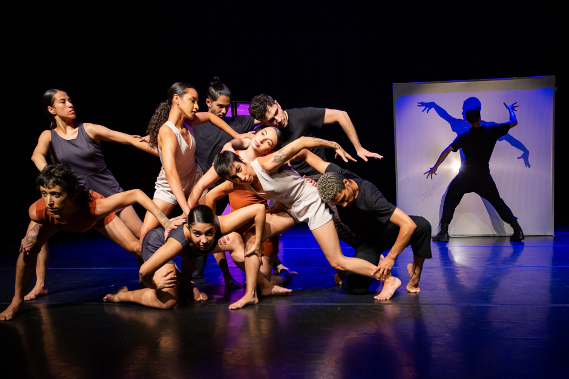
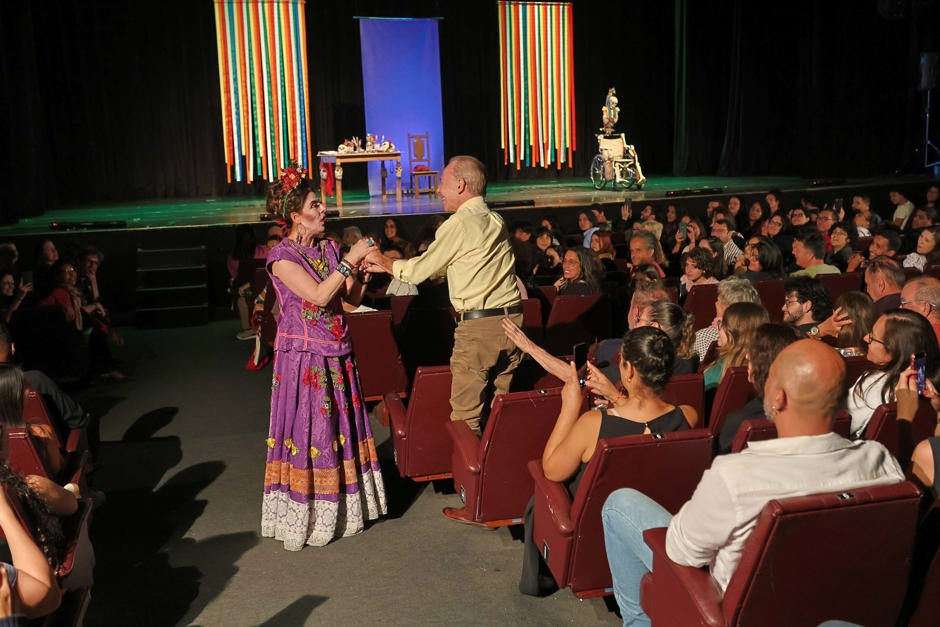
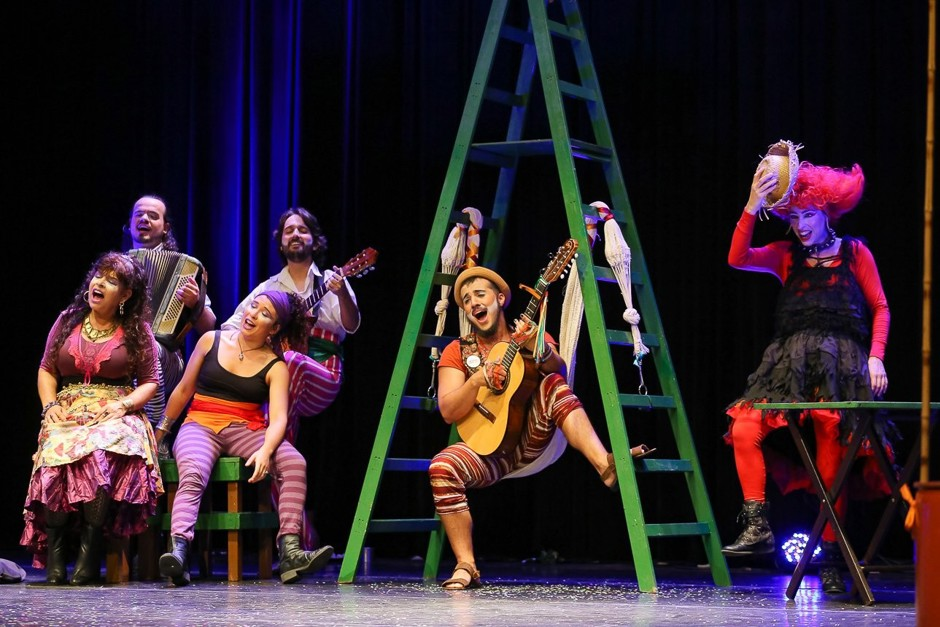
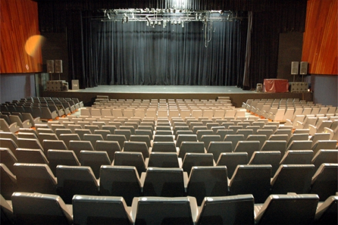
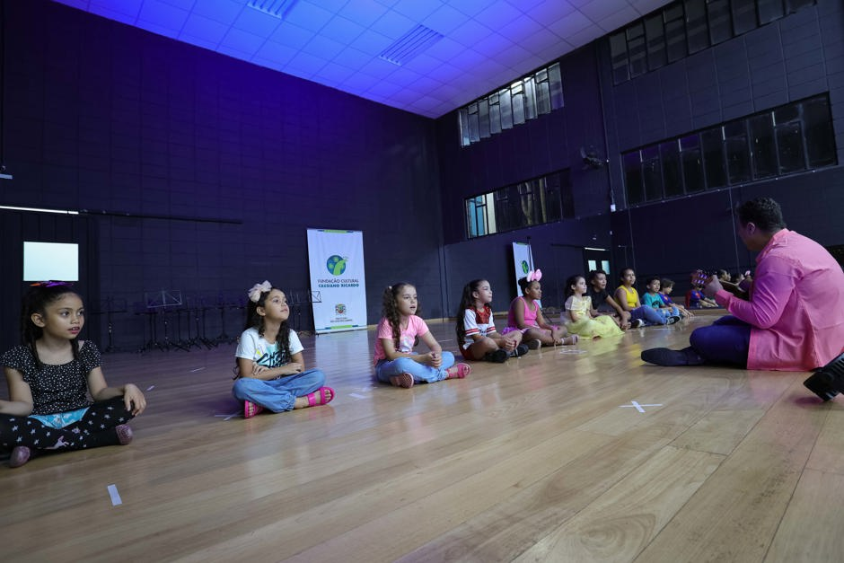

Festidança
Festival Nacional de Dança
Teatro MunicipalSão José dos Campos
Seu guia digital para a arte e cultura em sua região.

Festival Nacional de Dança
Teatro Municipal
Festival Nacional de Teatro
Espaços Culturais da Cidade
Apresentações Musicais Gratuitas
São José dos Campos
Mostra Cultural e Cinema
Centro Cultural
Formação Cultural Gratuita
Várias Regiões da CidadeO Portal Cultural de São José dos Campos é uma iniciativa acadêmica desenvolvida para ampliar o acesso da população às atividades culturais do município.
A plataforma reúne informações sobre eventos, artistas, oficinas, espaços culturais e projetos promovidos pela Fundação Cultural Cassiano Ricardo e demais agentes culturais da cidade.
O objetivo é fortalecer a difusão cultural, valorizar os artistas locais e facilitar o acesso da comunidade às oportunidades culturais disponíveis em São José dos Campos.